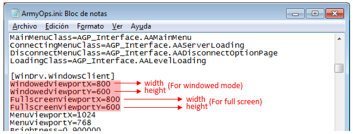

Help AA Browser V
1.2.1
Software configuration
How to choose a server to play
How to join a server
How to join unlisted servers
Map is not available for
download through DCDS
LAN/Practice
Join the created server
through the browser
Join the server
through the game browser
Run Server in CMD Option
Create a server over
the internet (using your house connection)
Server with a dynamic IP
Server with a static IP
Considerations in ports
How do I change the
screen resolution of the game
How do I modify the FOV
(field of vision)
SOFTWARE
CONFIGURATION
The only configuration to be
done is to establish the path to the ArmyOps.exe
file. The ArmyOps.exe
file is located in the System folder
of the game installation directory.
You can also choose the language. Currently English, Spanish, German, Dutch and Korean are available.
Do not forget to click on the Save
Settings button to save the changes.
It is not necessary to change the UDP
port unless this port is busy.
You also have the option to adjust the screen resolution of the game.
You have fullscreen mode and window mode.
HOW
TO CHOOSE A SERVER TO PLAY
To
choose a server you should look at the PING
value. The higher the PING
value the more lag you will experience in the game. You must should try
to choose the server that has the lowest Ping.
It is recommended that you choose the green server that has the lowest
value of PING to enjoy
excellent gameplay.
About
the Yellow and Red servers it's up to you to see if you get acceptable
playability on those servers. (will need to see how much lag issues you
get)
NOTE: the green
servers have values less than 150,
the yellow servers have values
between 150 and 250, and the red servers are those
with Ping values
greater than 250
HOW TO
JOIN A SERVER
Verify that the "Internet"
option is checked (1), select
a server from the list (2), enter your Username (3) and finally click
on the join server button (4) as shown in the following image
If you want to join the server as a Player
Administrator, all you have to do is enter the “Player Admin Password”
The servers that appear with a padlock
on the left side are with a password and to join you must enter the “Game password”.
HOW
TO JOIN UNLISTED SERVERS
If
you know a server that does not appear in the list and you know its IP
address and port, you can join the server in the following way:
Just check the box, enter the server IP address and the Port, and
finally click the button to join server.
MAP
IS NOT AVAILABLE FOR DOWNLOAD THROUGH DCDS
If
you get this message after joining a server. It means that your game
does not have that map available or does not have the same version of
the server map. You must download the map and copy it to the Maps
folder in the game's installation directory. To download the map
try to contact the server owner.
LAN/Practice
This
section allows you to create a local
server on your PC. Either to
explore the maps or practice alone or play with your friends on LAN.
When
you create a local server in the server status section, the text
"Completed Loading” should
appear as shown in the following image. When
this text appears it means that the server has finished loading and you
can now join it.
To join the server you have two alternatives, you can do it through the
browser or from the game.
Join
the created server through the browser
Once the server has finished loading. In the "Browser" tab select the option "LAN" (1), select the server (2),
enter your username (3), click on the "Join
Server" button (4).
Join the server
through the game browser
Run
the “ArmyOps.exe” file and
once inside the game you use the game
browser, go to the LAN section
and there you will see the server listed
as shown in the following image, select the created server and click
the “Join server” button.
Run
Server in CMD Option
If
you create a server with this option checked. A server will be created
in the CMD so that if you
close the browser the server will not be
closed. Use this option if you plan to create a server and you do not
want it to close when the browser is closed.
NOTE:
It is important that you understand that this section is only for
creating a local LAN server. It does not work to create a server over
the internet. If you want a server over the internet it is necessary to
perform additional tasks so that it works correctly and appears listed
in the browser.
CREATE A SERVER
OVER THE INTERNET (using your house connection)
Before
creating a server over the internet, you must be aware that by doing
you are assuming a responsibility. Since you have to ensure its proper
functioning, that is always available to players, and you also have the
responsibility to put order between the players if necessary.
Additionally you should be aware that not by mounting a server and that
appears in the browser list means that players will use your server. If
you want your server to be used you will have to attract players who
want to play in it and that means you will have to work on it.
Done the warnings then let's start.
The
following instructions assume that you want to create a server over the
internet that appears listed in the browser. And for this you need
a good internet connection. Your minimum upload speed must be 1 Mbit.
The first thing is to determine if you have a Static IP or a Dynamic IP (usually most internet
connections use Dynamic IP)
What is the difference between a
static IP and a dynamic?
A Static IP address is an
address that does not change. A Dynamic
IP
address instead it is an address that changes every time you
turn off
or restart your modem/router.
SERVER
WITH A DYNAMIC IP
It
is usually not advisable to mount a server of any kind with a dynamic
IP. Because this server would no longer be accessible to users when the
IP address changes. But fortunately there are free services on the
internet that allow you to mount a server with a dynamic IP. The
services that allow you to do this are called DDNS (dynamic Domain Name
System). There are several companies that offer this service for
free
on the internet, you just have to look for them.
With DDNS, you
will basically get a domain name (example:
your_domain.ddns.net) then
you will have to install on your pc a program that will update your
dynamic IP address so that your domain name is always linked to your
updated IP address. This way anyone who uses your domain name can
always access your server regardless of whether the IP of your modem
changes.
So the first thing you need to do is get a domain name
through the companies that offer the DDNS
service. For this just follow
the instructions offered by each of the companies that offer this
service.
The second thing you have to do is prepare your modem to
forward the ports that the server needs to be online. For this you will
have to review the manual of your modem and see how port forwarding is
done. The ports that you need to forward to have an AA server are: UDP
1716, UDP 1717 and UDP 7778.
Once you have properly configured the port
forwarding, you're practically ready to run your server. To do this,
run the browser, go to the LAN / Practice tab and create a server. It
is recommended that you check the "Run
server in CMD" option so that
you do not accidentally close the server when closing the browser. To
prove that your server is online you can ask someone to connect using
the method to join an unlisted server, you must provide the IP address
of your modem and port 1716.
The last thing you need to do is
make your server appear listed in the browser and for that the only
thing you have to do is to contact the Chevy's Place guys and ask them
to track your server.
IMPORTANT: Chevys-place only tracks servers
that are most of the time online, if your server is offline most of the
time then it will stop being tracked and will no longer appear in the
browser.
The data you have to provide for your server to be tracked in
Chevys-Place are:
-Your Server Name (the name you entered
when creating the server with the browser)
-your domain name (which you obtained from a DDNS provider)
-The game port 1716
-The Query port 7778
SERVER
WITH A STATIC IP
The
first thing you need to do is prepare your modem to forward the ports
that the server needs to be online. For this you will have to review
the manual of your modem and see how port forwarding is done. The ports
that you need to forward to have an AA server are: UDP
1716, UDP 1717 and UDP 7778.
Once you have properly configured the port
forwarding, you're practically ready to run your server. To do this,
run the browser, go to the LAN / Practice tab and create a server. It
is recommended that you check the "Run
server in CMD" option so that
you do not accidentally close the server when closing the browser. To
prove that your server is online you can ask someone to connect using
the method to join an unlisted server, you must provide the IP address
of your modem and port 1716.
The last thing you need to do is
make your server appear listed in the browser and for that the only
thing you have to do is to contact the Chevy's Place guys and ask them
to track your server.
IMPORTANT:: Chevys-place only tracks servers
that are most of the time online, if your server is offline most of the
time then it will stop being tracked and will no longer appear in the
browser.
The data you have to provide for your server to be tracked in
Chevys-Place are:
-Your Server Name (the name you entered
when creating the server with the browser)
-your modem external IP
-The game port 1716
-The Query port 7778
CONSIDERATIONS
IN PORTS
Port 1716
It
is a port that you can change if necessary. To change this port, open
the server.ini file located in
the System folder of the
game's
installation directory, search for the section [url] and edit the line
Port=1716. Do not forget that
if you change this port, you must
forwarding in the modem
Port 7778
This is the query port and
can not be modified by the user. In case this port is busy, the
server
will automatically use the next free port to this one. It is
recommended to forward ports for a certain interval, for example, from
UDP port 7778 to 7790
IMPORTANT
NOTE: In order for the
browser to
list a server, it is mandatory that your server use port UDP 7778 as
query port otherwise it will not be listed in the browser.
HOW DO I CHANGE
THE SCREEN RESOLUTION OF THE GAME
To
change the screen resolution of the game you can do it through the
Browser in the Settings tab or you can also do it by editing the file
ArmyOps.ini as detailed below.
If
you’re desired resolution is not available, to change the screen
resolution of the game you need to open the file ArmyOps.ini that is
located in the System folder
in the installation directory of the game.
Once
you have opened the file ArmyOps.ini
in the section
[WinDrv.WindowsClient] edit the
following lines as shown in the image.
Remember to save the changes.

NOTE:
the original aspect ratio of the game is 4:3. If you are going to
change the screen resolution for screens with aspect ratio 16:9 or
16:10 then it is recommended
that you also change the field of
View
(FOV). If you feel lazy to make the changes but you want to play
with a
good proportion of the image then play in window mode with 4:3
proportions.
HOW
DO I MODIFY THE FOV (FIELD OF VISION)
To
change the FOV you need to
open the file User.ini that is
located in
the System folder in the
installation directory of the game.
Once you have opened the file User.ini
in the section [Engine.PlayerController]
Find these lines:
DesiredFOV=90.000000
DefaultFOV=90.000000
Change
the values to set your FOV to
your preference. I recommend 90
for 4:3
displays, 100 for 16:10 displays, and 105 for 16:9 displays. Remember
to save the changes.
NOTE: About FOV, from experience I can say
that there are computers where it does not work, I think it depends on
the graphics card.